Боди-хоррор (англ. body horror, букв. «телесный ужас», «телесный хоррор»), известный также как органик-хоррор (organic horror) и биохоррор (biological horror) — поджанр ужасов в кино и литературе ужасов, для которого характерно особое внимание к человеческому телу и его трансформациям. Типичные мотивы боди-хоррора — разнообразные болезни, гниение, паразитизм, мутации и превращения, эксперименты с человеческим телом и создание монстров вроде чудовища Франкенштейна.
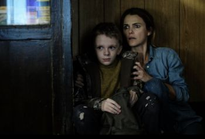
«Оленьи рога» (англ. Antlers) — научно-фантастический фильм ужасов режиссёра Скотта Купера. Фильм основан на рассказе Ника Антоски «Тихий мальчик», который был опубликован в интернет-журнале Guernica.
Релиз фильма был запланирован на 17 апреля 2020 года компанией Searchlight Pictures. Однако выпуск фильма был отменён в марте 2020 года из-за пандемии COVID-19 с намерением перенести его позднее в 2020 году. Сообщалось, что фильм будет выпущен 19 февраля 2021 года компанией Searchlight Pictures, однако, в январе 2021 года релиз был перенесён на 29 октября 2021 года.
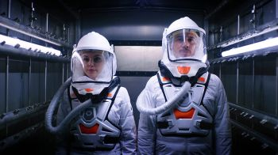
AKA:
Movie: The Complex: Lockdown
Storyline: After a major bio-weapon attack on London, two scientists debate whether to save a suspected terrorist's life. However, assassins have infiltrated the building, and soon the scientists find themselves with time, and options, running out.
Genres: Sci-Fi, Thriller
Actor: Michelle Mylett, Al Weaver, Kim Adis
Director: Paul Raschid
Country: United Kingdom
Duration: 78 min
Release: July 27, 2020 (United Kingdom)
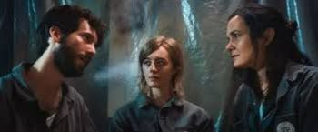
Movie: Cryo
Storyline: In an underground facility, five scientists wake from cryosleep with no memory of who they are or how long they've been asleep. They soon make a shocking realization: a killer is hunting them down there, and may even be hiding among them.
Genres: Mystery, Sci-Fi, Thriller
Actor: Jyllian Petrie, Emily Marie Palmer, Mason D. Davis
Director: Barrett Burgin
Country: USA
Duration: 118 min
Release: April 28, 2022 (Russia)
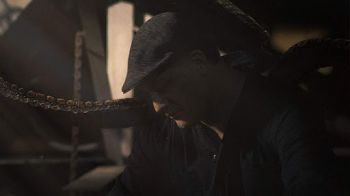
Movie: Dropa
Storyline: The hunt is on as a government assassin comes out of retirement to track down a killer extraterrestrial murdering the former members of his team in this science fiction thriller set in an alternate future America.
Genres: Drama, Sci-Fi, Thriller
Actor: Jason Douglas, David Matranga, James Hong
Director: Wayne Slaten
Duration: 101 min
Release: 6 December 2019 (USA)
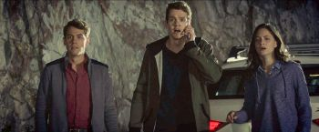
Movie: Entagled
Storyline: Four brilliant university students are forced to confront themselves in terrifying ways when their Quantum Physics experiment leads to an entangled parallel existence that leaves them questioning who they are and what is real.
Genres: Drama, Sci-Fi
Actor: Munro Chambers, Sandra Mae Frank, Paloma Kwiatkowski
Director: Gaurav Seth
Country: Canada
Duration: 90 min
Release: October 15, 2019 (Poland)
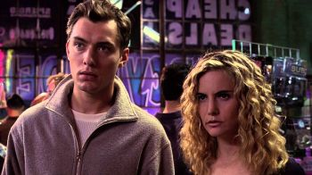
«Экзистенция» (англ. eXistenZ) — научно-фантастический/психологический триллер 1999 года режиссёра Дэвида Кроненберга. В главных ролях Джуд Лоу и Дженнифер Джейсон Ли.
Новелизации:
Кристофер Прист написал одноимённый роман для сопровождения фильма «Экзистенция», тема которого имеет много общего c темами его собственных произведений.
Продюсеры фильма, венгры Андраш Хамори (Hámori András) и Роберт Лантош (Lantos Róbert), сообщили, что буквы X и Z выделены не случайно, между ними стоит слово «isten», которое в переводе с венгерского означает «Бог».
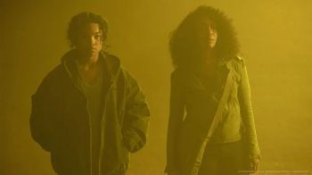
Movie: Gray Matter
Storyline: Aurora has known all her life from her mother that the superhuman abilities they have also make them dangerous. Now, Aurora will discover if her mother was speaking the truth on one fateful and fatal night.
Actor: Mia Isaac, Jessica Frances Dukes, Garret Dillahunt
Director: Meko Winbush
Duration: 87 min
Release: July 13, 2023 (United States)
«Рой» (англ. The Hive) — американский триллер с элементами научной фантастики, снятый режиссёром Дэвидом Яровески по собственному сценарию. Впервые картина была показана 19 сентября 2014г. на кинофестивале Fantastic Festruen. Мировая премьера состоялась на San Diego Comic-Con International в июле 2015г.
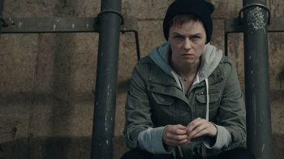
Movie: Implanted
Storyline: Sarah, a struggling young woman living in Brooklyn, agrees to volunteer as an experimental test subject for a pharmaceutical company called Dynamic Health Cure to be implanted with the LEXX nanochip. Sarah hopes that the money received for her participation will solve her financial troubles and help her to take care of her mother who has Alzheimer's. A nanochip is implanted in her cerebral cortex. It is designed with artificial intelligence technology to take control of the body at the inception of any disease or illness. When the implant turns sinister and orders her to commit crimes, Sarah is plunged into a murderous spiral with only one choice: to live or die.
Actor: Michelle Girolami, Nader Boussandel, Scott Broughton
Director: Fabien Dufils
Duration: 96 min
Release: October 1, 2021 (United States)
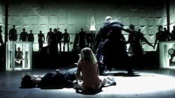
«Инк» (англ. Ink) — фильм режиссёра Джеймина Уайнэнса. Фильм создан независимой компанией Double Edge Films, принадлежащей режиссёру.
«Смертельная зона» (англ. Outside the Wire) — американский научно-фантастический фильм, режиссёра Микаэля Хофстрёма. Фильм вышел на Netflix 15 января 2021 года.
«Оверлорд» (англ. Overlord) — американский военный фильм ужасов 2018 года режиссёра Джулиуса Эйвери. Сюжет фильма вращается вокруг нескольких американских солдат, которые, после уничтожения авиации участвовавшей в операции высадки в Нормандии (операция «Оверлорд»), оказываются в тылу врага и обнаруживают тайные эксперименты нацистов.
Сценарий фильма написали Билли Рэй и Марк Смит. Главные роли в фильме исполняют Джован Адепо, Джейкоб Андерсон, Пилу Асбек, Иэн Де Кэскер, Джон Магаро, Уайатт Рассел и Букем Вудбайн. Джей Джей Абрамс через свою компанию Bad Robot Productions выступил вместе с Линдси Уэбер продюсером фильма.
Фильм был выпущен в прокат в Соединённых Штатах компанией Paramount Pictures 9 ноября 2018 года.
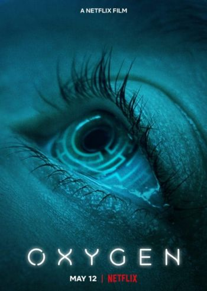
«Кислород» (англ. Oxygen) — научно-фантастический фильм режиссёра Александра Ажа с Мелани Лоран в главной роли. Премьера фильма состоялась на Netflix 12 мая 2021 года.
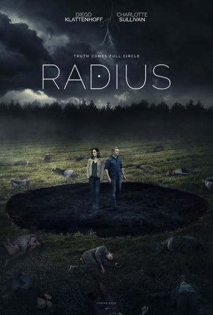
Radius is a 2017 Canadian science fiction thriller film directed and written by Caroline Labrèche and Steeve Léonard. It stars Diego Klattenhoff, Charlotte Sullivan, and Brett Donahue. Klattenhoff and Sullivan play two survivors of a car accident who discover that one causes the death of anyone who comes within a certain radius of him, and the other has the ability to nullify this effect.
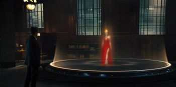
«Воспоминания» (англ. Reminiscence) — американский научно-фантастический фильм. Полнометражный режиссёрский дебют Лизы Джой.
Фильм вышел в международный прокат 25 августа 2021 года.
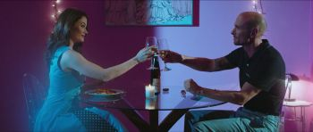
Movie: R.I.A.
Storyline: In 2040, a female humanoid A.I. is hacked by her husband and forced to kidnap the U.S. vice president's son and execute him on live television.
Genres: Crime, Sci-Fi, Thriller
Actor: Luke Goss, Dean Cain, Amar Adatia
Director: Richard Colton
Duration: 95 min
Release: December 17, 2021 (Russia)
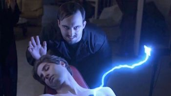
Movie: Tabernacle 101
Storyline: It is about two Atheists who run a video blog debunking Psychics, Mediums and religious beliefs. However, a death experiment goes totally wrong and as a result they attract evil entities that stalk and haunt them.
Genres: Drama, Fantasy, Horror, Mystery, Sci-Fi, Thriller
Actor: David Hov, Mikaela Franco, Elly Hiraani Clapin
Director: Colm O'Murchu
Country: Australia
Duration: 98 min
Release: 30 August 2019 (USA)
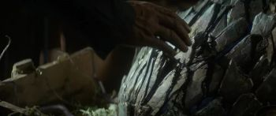
Terminus is a 2015 Australian science-fiction drama film directed by Marc Furmie, who wrote it with Shiyan Zheng and Gabriel Dowrick. It stars Jai Koutrae, Todd Lasance, Bren Foster, and Kendra Appleton. Terminus tells the story of David, a small-town American who has a near-fatal accident after coming in contact with a meteorite. The meteorite has properties that have enormous implications for mankind.
The film was made on a small budget in Sydney, with a predominantly Australian cast. It has been praised for its character introspection and classic sci-fi feel.
«Виктор Франкенштейн» (англ. Victor Frankenstein) — американский драматический фильм ужасов режиссёра Пола Макгигана. Сценарий фильма был написан Максом Лэндисом, основанный на романе английской писательницы Мэри Шелли «Франкенштейн, или Современный Прометей», выпущенном в 1818 году. В фильме снялись Джеймс Макэвой в роли молодого учёного Виктора Франкенштейна и Дэниел Редклифф в роли его помощника Игоря. Мировая премьера фильма состоялась 25 ноября 2015 года, премьера в РФ — 26 ноября. Дата выхода на диске 8 марта.
История рассказывается от лица Игоря. В фильме показываются его дружба с молодым учёным Виктором фон Франкенштейном, а также становление Франкенштейна как человека-легенды.
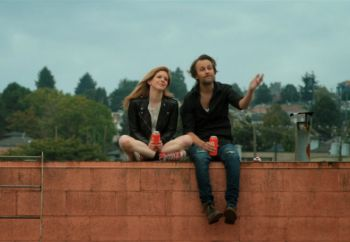
Volition is a 2019 Canadian science fiction thriller film written by Tony and Ryan W. Smith and directed by Tony Dean Smith. The film stars Adrian Glynn McMorran, Magda Apanowicz, John Cassini, Frank Cassini, Aleks Paunovic, and Bill Marchant. The film premiered at the 2019 Philip K. Dick Science Fiction Film Festival.
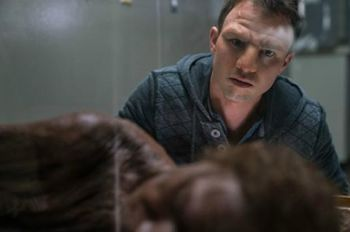
Movie: William
Storyline: Julian Reed and Barbara Sullivan create a Neanderthal baby using ancient Neanderthal DNA from a Neanderthal bog body. William must learn to exist in a world where he is the ultimate outsider, the only Neanderthal on the planet.
Genres: Adventure, Drama, Family, Sci-Fi
Actor: Brody Wilkinson, Connor Wilkinson, Obada Adnan
Director: Tim Disney
Release: April 26, 2019 (United States)
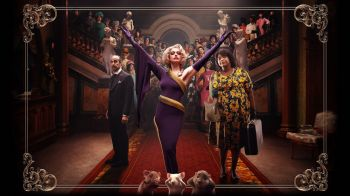
«Ведьмы» (англ. The Witches) — американо-мексиканский кинофильм Роберта Земекиса. В главной роли: Энн Хэтэуэй. Выход фильма состоялся 29 октября 2020 года.